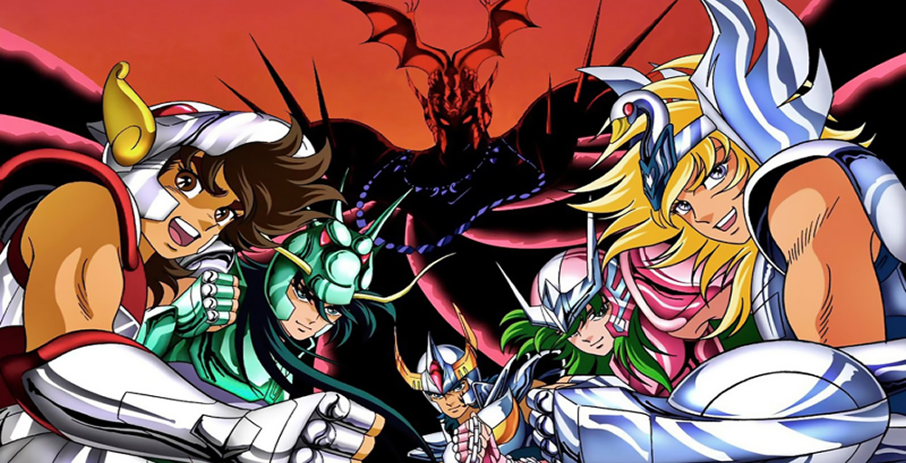
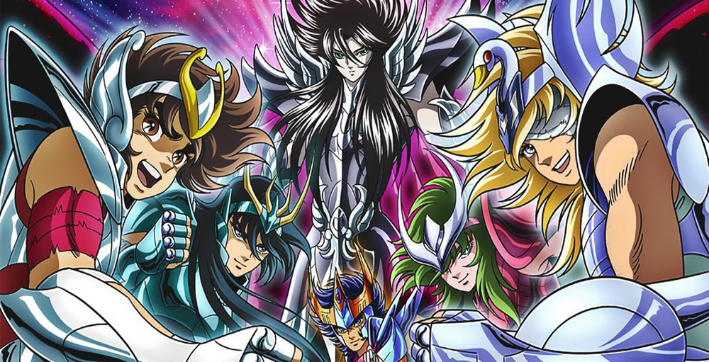
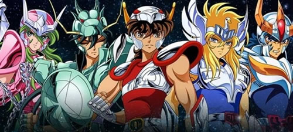
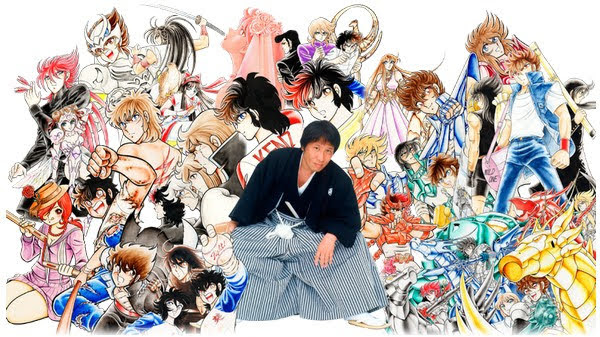
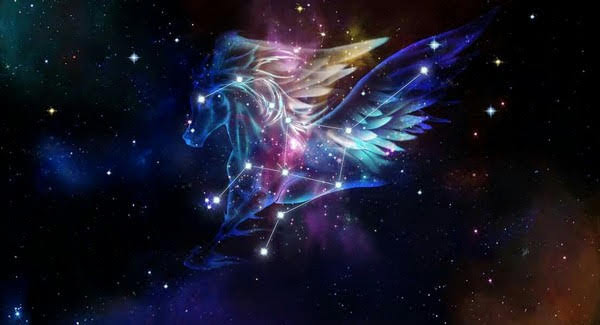
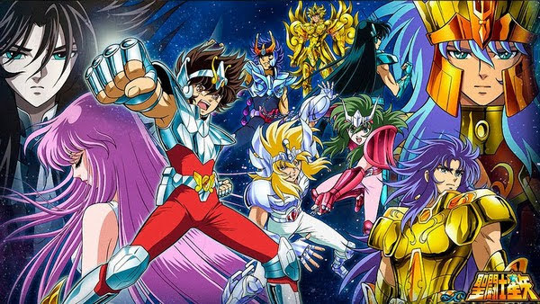
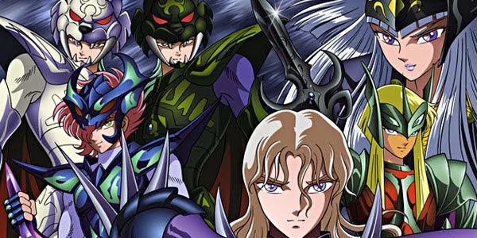

A empresa responsável pela produção foi a Toei
Animation e
o primeiro episódio foi ao ar no dia 11 de outubro de 1986, pela TV japonesa
ASAHI

No Brasil...
No Brasil a série chegou em 1994. Com nome herdado da
França, Os Cavaleiros do Zodíaco tiveram sua primeira exibição no dia 1º de
setembro, na extinta Rede Manchete.

O Sucesso...
O desenho começou a ser exibido em dois horários: as
10h30min dentro do programa infantil Dudalegria e as 18h30min dentro de outro
programa infantil, o Clube da Criança.
Um sucesso da década de 90, Os Cavaleiros do Zodiaco foi um dos animes japoneses de maior sucesso da
televisão aberta brasileira. A franquia criada originalemente no mangá de Masami Kurumada foi uma
das obras responsáveis por abrir os olhos do público para esse tipo de obra como transformar os
animes em uma febre que nunca esfriou no Brasil.


Masami Kurumada



MENU
Volte a Nossa Página inicial sobre Animes famosos...


 Veja
Mais...
Veja
Mais...